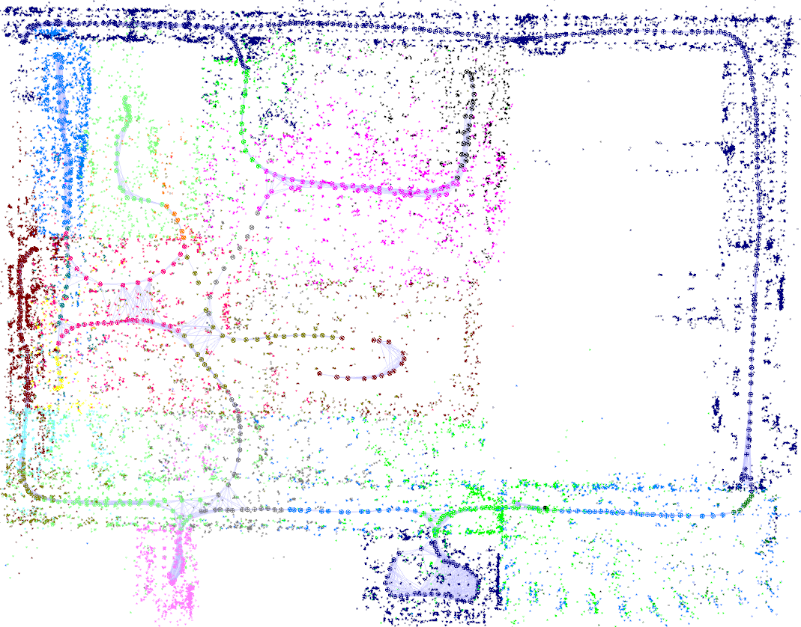
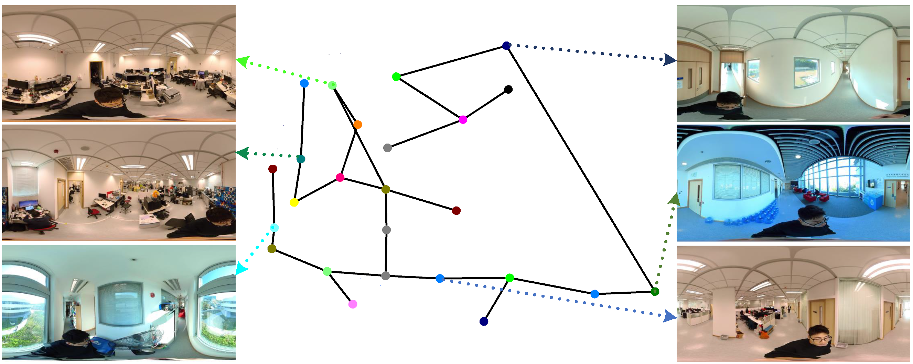

360ST-Mapping: An Online Semantics-Guided Topological Mapping Module for Omnidirectional Visual SLAM
2 The Hong Kong University of Science and Technology
Abstract
Topological map as an abstract representation of the observed environment has the advantage in path planning and navigation. Here we proposed an online topological mapping method, 360ST-Mapping, by making use of omnidirectional vision. The 360 ◦ field of view allows the agent to obtain consistent observation and incrementally extract topological environment information. Moreover, we leverage semantic information to guide topological places recognition further improving performance. The topological map possessing semantic information has the potential to support semantics-related advanced tasks. After combining the topological mapping module with the omnidirectional visual SLAM, we conduct extensive experiments in several large-scale indoor scenes to validate the effectiveness.
Results

Figure 1. The mapping results on the academic building. Our proposed method 360ST-Mapping is integrated into an omnidirectional visual SLAM. It can identify individual places (denoted as distinct colors) and generate topological map online.
 Figure 2. The results on the laboratory scene. The left is the landmark map and the right is the the topological map with parts of scene reference keyframes.